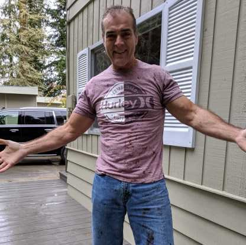

Target Audience
The target audience for this website are adults (and teenagers who have access to the internet) who want to look up the current and expected weather for their area. These people are also interested in learning other things about their area, such as joining neighborhood groups, learning about upcoming activities, or just being more involved in their community.
Personas
Rachel Peterson
Rachel Peterson is a 38 year old mother of 2. She just moved to Idaho to be nearer to her husband's family. Her 11 and 14 year old daughters are in multiple sports and she spends a lot of time going to different sporting events to cheer on her children. She finds herself checking the OurWeatherHotSpot.com at least once a day to make sure she and her children are dressed appropriately for all their outdoor activities. She also uses the site to look for other activities for their family to particpate in and to get the know the area and community better as they settle in.
Jacob Jones
Jacob Jones is a 55 year old father and grandfather. He grew up in California but moved to Idaho to go to school as a young man and has lived here ever since. He owns his own company called Landscape Lane. Although he no longer goes out to jobsites, he still needs to be able to plan landscaping projects around the weather, thus he's checking for weather updates on a regular basis. He has also decided that he wants to start advertising on local websites, which led him to OurWeatherHotSpot.com as a place to advertise his business to his local community.
Scenarios
- What is the weather going to be like for my baseball game tonight?
- I want to organize a fun run for my kids, and I want to open it up to the rest of our community also.
- Are there any concerts in the park this weekend in Preston?
- Is it going to rain next week during my daughter's outside birthday party?
- When is the last frost date so I know when to start planting my garden?